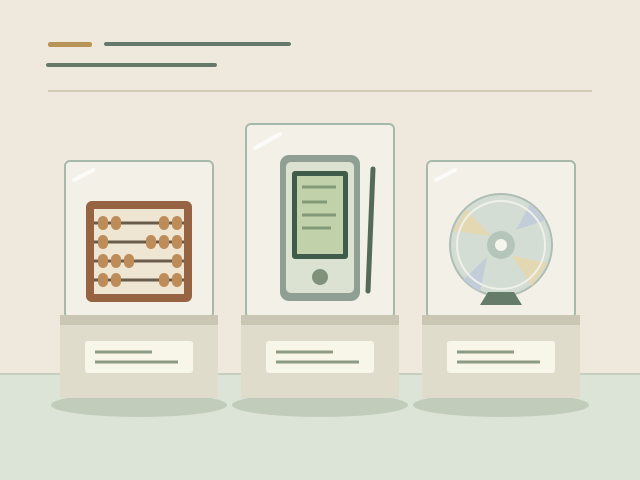

О музее
ByteMuseum — музей компьютеров, вычислительных устройств и цифровых технологий.
Мы знакомим с историей техники через задачи, которые она помогала решать: считать, хранить данные, работать с программами и общаться с машиной.
Счёты и арифмометр, персональный и карманный компьютеры, перфокарта и оптический диск показывают разные этапы этой истории. Меняются материалы и механизмы, но за каждым устройством остаётся человеческая идея.

Что объединяет коллекцию
Вычислять
От перемещения костяшек до вращения шестерёнок и электронных схем. Счёты, арифмометр и калькулятор помогают понять, как люди упрощали работу с числами.
Устройства для вычислений →Взаимодействовать
Компьютер становится персональным, а затем помещается в кармане. Вместе с ним меняются способы управления: клавиатура, мышь, сенсорный экран и стилус.
Персональная техника →Сохранять
Отверстия в бумаге, магнитная запись и отражение лазерного света — разные способы представить информацию, сохранить её и передать другому устройству.
Носители информации →Выберите свой маршрут
Начните с экспоната, который вызывает любопытство, или выберите экскурсию по интересующей теме. Подробные описания помогут разобраться в устройстве техники, а истории носителей и компьютеров — увидеть связь между разными эпохами.
Билеты, правила посещения и адрес →